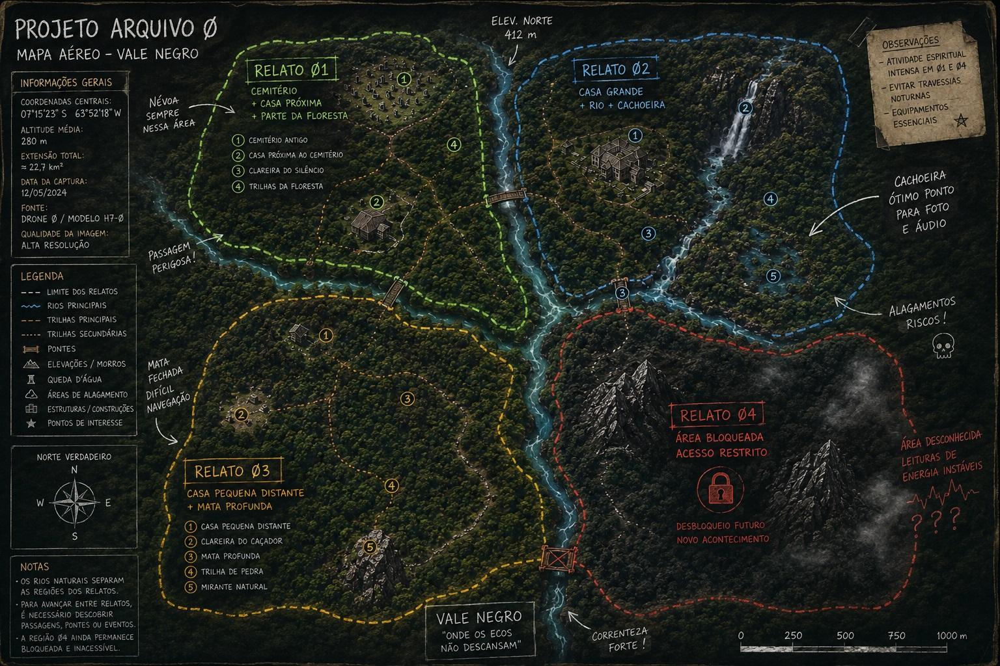
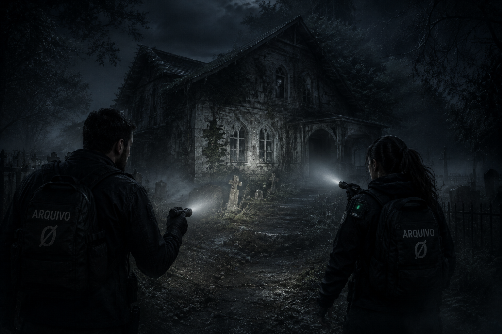
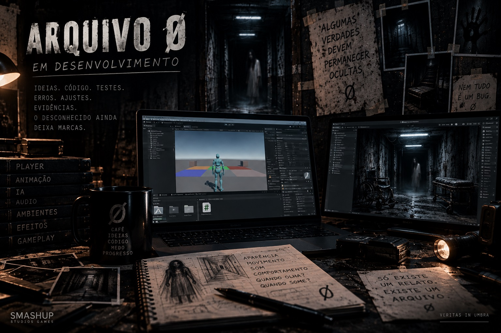
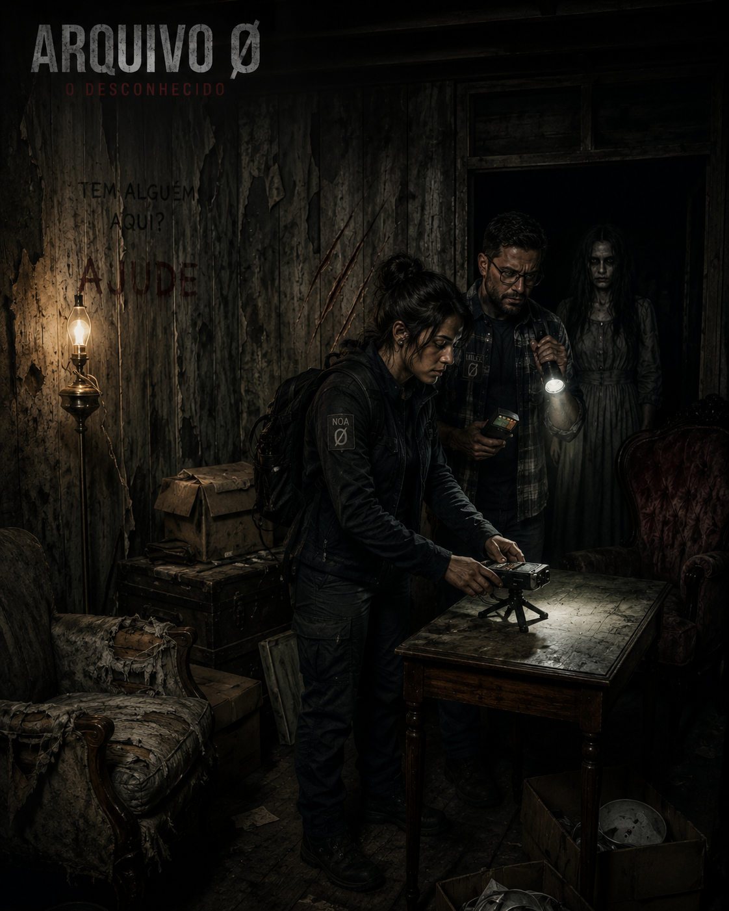
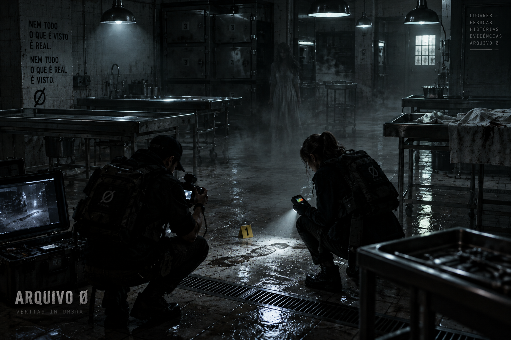
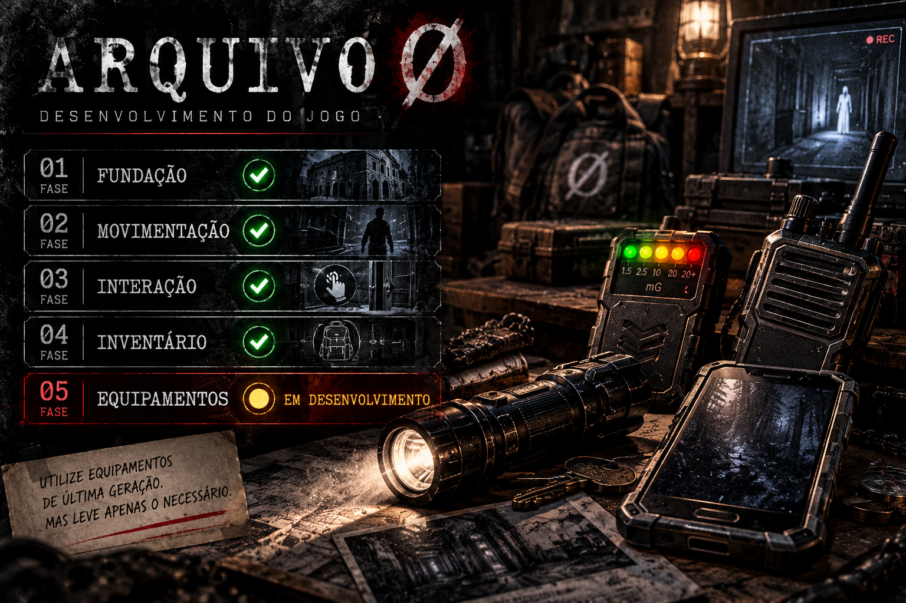
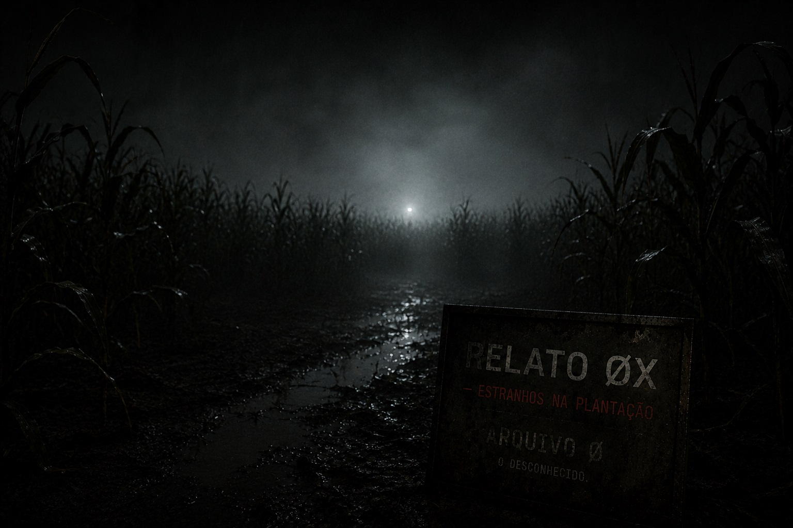
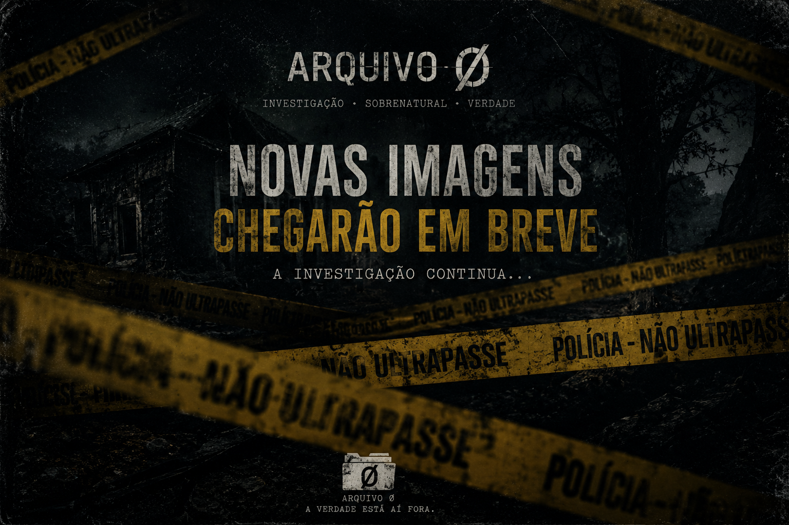

ARQUIVO Ø · REGISTROS DE DESENVOLVIMENTO
DIÁRIO DE DESENVOLVIMENTO
Cada etapa vencida deixa um registro. Aqui você acompanha o ARQUIVO Ø desde os primeiros rabiscos até os sistemas que dão vida à investigação.

Ø1 - Rabiscos, primeiros mapas e codificação básica dos movimentos.

Ø2 - Primeira ideia de como iniciar a investigação.
A pergunta é: será que seu coração aguenta?

Ø3 - PRIMEIROS MOVIMENTOS
O ARQUIVO Ø já deixou de existir apenas no papel.
As entidades permitiram que parte do seu desenvolvimento fosse divulgada. Não sabemos por quanto tempo essa autorização permanecerá válida.

Nesta etapa, estamos construindo e testando a base de movimentação do investigador dentro dos ambientes. O personagem já caminha, corre, recua, agacha e responde aos movimentos de visão. As animações estão sendo integradas e ajustadas para que cada ação aconteça de maneira natural durante a exploração.
Os primeiros testes de áudio também começaram. Passos serão tratados de acordo com a superfície percorrida, permitindo que madeira, terra, água, entulho e outros materiais participem da experiência sonora da investigação.
Também iniciamos os sistemas que permitirão ao investigador interagir com o ambiente. A mira central e a detecção de objetos formam a base do que futuramente permitirá examinar, coletar e transportar equipamentos.
Ainda estamos construindo os instrumentos necessários para entrar nesses lugares.
Talvez devêssemos aproveitar enquanto eles ainda permitem que saiamos. Ø
O investigador já consegue caminhar.
Agora precisamos dar a ele motivos para ter medo de continuar. Ø
ATENÇÃO:
As entidades ainda não autorizaram a divulgação de vídeos.

Ø4 - PRIMEIROS MOVIMENTOS - FLEXIBILIDADE
O investigador agora pode examinar o ambiente ao seu redor com muito mais liberdade.
Acima, abaixo, à frente ou atrás. Pequenos detalhes podem estar onde ninguém pensaria em procurar.
No ARQUIVO Ø, olhar não será apenas uma questão de orientação. Pode ser a diferença entre encontrar uma evidência e passar por ela sem perceber.
O Player terá muito trabalho pela frente.
Cada movimento permite um novo ângulo.
Cada passo, uma nova descoberta.
ATENÇÃO:
As entidades começaram a ficar irritadas.
Ø5 — O INVESTIGADOR COMEÇA A SE EQUIPAR
O desenvolvimento do ARQUIVO Ø entrou em uma nova etapa.
Nas primeiras versões, nosso objetivo era fazer o investigador existir dentro do ambiente: movimentar-se, observar, agachar, interagir e responder ao espaço ao seu redor.
Agora, começamos a construir aquilo que transformará essa movimentação em investigação.
O sistema de inventário e equipamentos começou a tomar forma. Os itens já não são apenas objetos previstos no projeto: passam a possuir posição, estado e função dentro da estrutura do jogador. Equipamentos podem ser selecionados, equipados e removidos, preparando a base para lanternas, detectores, câmeras, dispositivos de comunicação e todas as ferramentas que serão levadas para uma investigação.
É uma mudança menos visível que um novo cenário ou uma entidade atravessando um corredor.
Mas é uma das mais importantes.
Porque, a partir daqui, cada novo equipamento poderá deixar de ser apenas uma ideia escrita no projeto e começar a existir nas mãos do investigador.
ETAPA ATUAL
Equipment System — em desenvolvimento
PRÓXIMOS REGISTROS
Integração dos equipamentos com os slots, representação visual dos itens e comportamento individual de cada ferramenta.
O investigador já consegue entrar.
Agora estamos decidindo o que ele poderá levar consigo.

ATENÇÃO:
As entidades estão mais do que irritadas. Elas fingem ajudar...

ØX - Alguns relatos chegam incompletos. Outros parecem absurdos demais para serem investigados.
Este chegou acompanhado de fotografias, depoimentos contraditórios e uma recomendação bastante simples: não estar naquele lugar depois que escurecer.
Ainda não sabemos o que aconteceu ali. Também não sabemos por que pessoas que nunca se conheceram descrevem exatamente a mesma coisa. Por enquanto, o caso permanecerá fechado. Mas alguma coisa está acontecendo naquele lugar. E, aparentemente, ainda não terminou.

ØX - NOVOS ARQUIVOS EM BREVE
ARQUIVO Ø